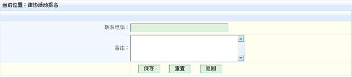

东莞市律师协会执业律师
继续教育培训考核系统
用
户
手
册
（律师事务所管理员适用）
深圳市长鹏计算机软件有限公司
二00八年六月
东莞市律师协会执业律师
继续教育培训考核系统
用
户
手
册
（律师事务所管理员适用）
深圳市长鹏计算机软件有限公司
二00八年六月
目 录
东莞律师继续教育考核培训系统
用户手册
东莞执业律师继续教育考核培训系统（以下简称为“系统”）是一套以电子化考核、在线视频培训为主的管理系统，该系统运用最新的管理软件技术、视频播放技术、智能卡技术、互联网技术等，对执业律师的继续教育实现电脑化、自动化、智能化考核管理。
使用该系统后，律协在现场培训点安放移动式智能卡考勤系统，对参加培训的律师进行身份验证，并根据其参会场次和每次的学习时间自动计算其所获积分，可有效防止代签及中途退场现象，使培训真正达到效果。年度注册时可根据电脑自动统计结果确定该律师是否已经获得足够积分，整个过程一目了然，轻松自如，再也不用像以前的人工手工计算统计费时费力。
另外通过该系统，律协可以及时收集会员学习的反馈意见，及时对课程做出调整，提高兴趣点，吸引更多的会员参加，形成良性循环，从根本上解决培训工作的难处，使之真正落到实处。
该系统可以自动记录律师考核的全部信息，每位律师都可随时通过互联网登录该系统查询自己的培训考核情况、预定未来的培训课程、对以往的培训情况进行评价和反馈，提出意见，另外还可对自己漏掉的课程在网上通过在线培训的方式进行补偿，并获取相应学分。
 每位律师获得一张电子培训卡，上面印制有律师姓名和执业证号，律师可凭该电子培训卡登录在线培训系统观看视频教学，并由此获得学分。
每位律师获得一张电子培训卡，上面印制有律师姓名和执业证号，律师可凭该电子培训卡登录在线培训系统观看视频教学，并由此获得学分。
该卡如有遗失，应第一时间到东莞律协进行登记补办。
 进入东莞律协网站www.dglawyer.cn ，在首页找到菜单区的“教育培训”或网站导航区的“教育培训”，如下图所示：
进入东莞律协网站www.dglawyer.cn ，在首页找到菜单区的“教育培训”或网站导航区的“教育培训”，如下图所示：


点击“教育培训”后会弹出如下登录界面：

输入律师事务所管理员的用户名和密码即可“东莞执业律师继续教育培训考核系统”。
注：律师事务所管理员进入系统的帐号为该律师事务所的执业证号，初始密码为123456。
打开平时上网用的浏览器IE，在地址栏输入www.lawyeredu.com ，回车后出现以下界面：


在会员登录界面中，选择“东莞”即可进入系统。
注：律师事务所管理员进入系统的帐号为该律师事务所的执业证号，初始密码为123456。
如果登录界面无法正常显示，可检查工作电脑的IE浏览器，是否被流氓软件或恶意代码破坏。
登录后，即可显示系统首页，首页结构分为三栏，最上面为Banner位标题栏，左侧为菜单栏，中间为正文栏，右侧是本事务所的信息和有关的课程评论，如下图所示。
系统首页显示最新的课程信息及相关的课程评论。

登录后在首页最顶部会有一个重要通知，点击“完善资料”，即可补充完善律师自己的个人资料，以便有最新的培训信息时及时通知。

录入完成后可以看到本所律师的列表：

点击左侧菜单的“在线课程”，出现详细的课程信息，如下图所示：

点击右侧的“观看”，弹出视频播放窗口，点击“从头播放”按钮即可开始播放视频课程。为防止人不在场而空放视频的作弊行为，在播放过程中，每隔10到20分钟会随时出现“获取xx分钟”的提示，必须点击该提示才能继续播放，同时将观看的时间转化为培训时间，最终换算成积分。
注意：课程播放过程中，每隔10到20分钟会随机出现已培训多长时间的提示，同时画面暂停，点击后该时间会累加到获得的培训时间中，同时画面继续播放。
点击左侧菜单的“在线课程”，出现详细的课程信息，点击右侧的“观看”按钮，在弹出的窗口中选择“从上次得分段播放”，即可从上一次获取学分的位置继续观看视频。具体可参见上面的图示。
点击左侧菜单的“积分查询”，出现下面的积分统计信息，事务所管理员可以看到本所所有律师的培训积分情况，以便及时提醒本所律师完成全年的培训任务，如下表所示：
积分包括现场培训课程积分、在线视频培训积分、外部积分以及报名未到扣分等。

事务所管理员登录后，可以点击“岗前培训－培训安排”， 出现岗前培训的列表：

未到期的培训会显示出“我要报名”的链接，点击后出现下图，填写后点击保存即可：

其他活动报名主要是指除培训课程以外的一些活动，如关于报名参加“集体谈判与企业社会责任论坛”的通知等。
点击左侧菜单的“活动安排”，出现目前的活动及自己的报名信息，如下图所示。事务所可以根据本所需要或律协要求选择参加不同的活动，及时进行网上报名。

报名时，选择上方的“我要报名”按钮，出现下面的窗口：

填写完相关信息后，最后点击“保存”完成报名操作。
报名完成，报名结果会自动进入律协管理员系统中，供律协管理人员进行统计。
点击左侧菜单的“修改密码”，出现下面的密码修改框，输入原密码和新密码后，点击“确认”按钮即可完成修改。

 |